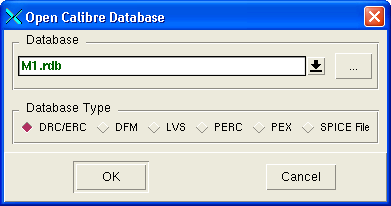
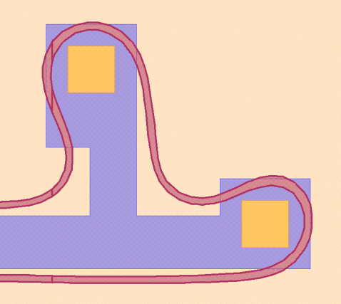
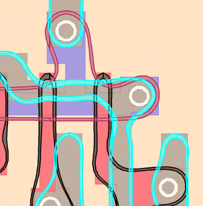

Calibre RVE is
a graphical debug program that interfaces with most IC layout tools.
You can view the PV-band data using Calibre RVE in conjunction with
the layout viewer.
PV-band data is saved in the
form of GDS, OASIS, or results database (RDB). If saving to GDS
or OASIS, view the PV-bands with the layout viewer. It is best to
avoid viewing an RDB due to the large number of sample points.
Procedure
Open the design database in
Calibre DESIGNrev or Calibre WORKbench.
Choose Verification > Start RVE.
In the Calibre RVE dialog
box, make sure to select the “DRC/ERC” database type, supply the
path to the Bands database1,
and then click OK.

In the RVE window, select
the PV-band data for a single experiment on a single layer.
Click the Highlight
Current button, or right-click and select Highlight.

Repeat for other layer/experiment/band
types as desired.

Note:
While you could display all PV-band data at
once by selecting Highlight
> Highlight all, the steps described here
are preferred because each set of PV-band data is displayed on a
different layer. This allows you to work with each set of PV-bands
individually.